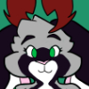
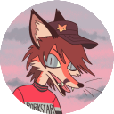

Furries of Neocities
Hosted by Oddie
(this page is under construction!)
This page will serve as a helpful guide to anyone looking for other furs in the Neocities pool of sites.
Community events and challenges may be hosted here in the future.
Click to join!
 Taken by Flipp Syder!
Taken by Flipp Syder!
Community Listing
Oddie

An artist and member of the fandom for five years. Site features art, furry fandom-centric pages, as well as a live blog and music. Jackalope.
Flipp Syder

A talented photographer and active con-goer. His site features folders upon folders of dynamic fursuit photography. Red fox.
Mori
"A happy little spot online". Features original art, a diary, and a section to cheer you up (not furry-centric). Cat.